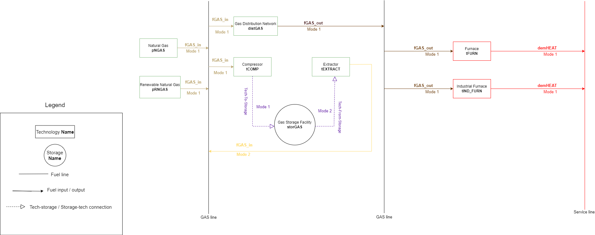

IESVic OSeMOSYS Notebook#
Introduction#
This notebook contains the OSeMOSYS framework for energy modelling with an implementation in Python, using the Pyomo module. This Jupyter file is best run using Google Colab. The flowchart below contains the workflow for this notebook.

| Solver | Use | Call inside Pyomo |
|---|---|---|
| COIN-OR Clp | LP | opt = SolverFactory('clp') |
| COIN-OR Cbc | MILP | opt = SolverFactory('cbc') |
| COIN-OR Ipopt | NLP | opt = SolverFactory('ipopt') |
| COIN-OR Bonmin | MINLP | opt = SolverFactory('bonmin') |
| COIN-OR Couenne | Global MINLP | opt = SolverFactory('couenne') |
Important Information for Exercises#
If the notebook is being executed in exercise mode, you might need to re-run the initialization of a few parameters. This happens because, while Pyomo allows us to set some of the parameters as “mutable” to be changed in real time with the previous solution of the model still stored in memory, other parameters cannot be set as mutable if the constraints in which they are envolved are of a boolean nature. A boolean constraint is one where the condition for the model remain within that boundary is of True vs False nature. This is not always the case, since in some occasion, it may be that the constraint is only assessing if a particular value is contained within numerical boundaries, and not necessarely if a condition is true, or not.
Some of the parameters which will not be mutable for the purposes of this model are the “efficiencies”, or the input and output Activity Ratios, and the Specified Demand Profiles. In order to change these parameters, set the Exercise_Flag to True and then select the scenario you wish to run by changing the sheet_name variable of the read_excel method from Pandas. These scenarios are different sheets from the amples Excel files provided.
The image below is the reference energy system for this model.

# File paths inside Google Colab's main folder
sets_file = "/content/Sets_toy_model.xlsx"
parameters_file = "/content/Param_toy_model.xlsx"
# Activity Ratio files - to be used in exercises (set flag to True and re-run the model when using these files)
Exercise_Flag = True
if Exercise_Flag is True:
print("Which scenario (from 1 to 5) would you like to select? ")
select_IAR = input("For the input activity ratios (1 is the default scenario): ")
if float(select_IAR) > 5 or float(select_IAR) < 1:
raise Exception("No input activity ratio for scenario " + select_IAR)
select_SDP = input("For the specified demand profile (1 is the default scenario): ")
if float(select_SDP) > 5 or float(select_SDP) < 1:
raise Exception("No specified demand profile for scenario " + select_SDP)
IAR_exercise = pd.DataFrame(pd.read_excel("/content/Input_Activity_Ratio_Samples.xlsx", sheet_name="IAR_Sample"+select_IAR))
SDP_exercise = pd.DataFrame(pd.read_excel("/content/Demand_Profile_Samples.xlsx", sheet_name="SDP_Sample"+select_SDP))
model = AbstractModel(name="OSeMOSYS_IESVic") # Create model object and give it a name
Which scenario (from 1 to 5) would you like to select?
For the input activity ratios (1 is the default scenario): 3
For the specified demand profile (1 is the default scenario): 1
Solving the Model#
The next cell solves an instance of the model using the solver of the user’s choice. You may change the SolverFactory to the available solver of your choice
instance = model.create_instance()
opt = SolverFactory('cbc') # Choose solver to be used
final_result = opt.solve(instance, tee=True).write()
Welcome to the CBC MILP Solver
Version: 2.10.8
Build Date: Feb 3 2023
command line - /content/bin/cbc -printingOptions all -import /tmp/tmp96ig2y4_.pyomo.lp -stat=1 -solve -solu /tmp/tmp96ig2y4_.pyomo.soln (default strategy 1)
Option for printingOptions changed from normal to all
Presolve 589 (-9164) rows, 644 (-8684) columns and 2867 (-19026) elements
Statistics for presolved model
Problem has 589 rows, 644 columns (487 with objective) and 2867 elements
Column breakdown:
459 of type 0.0->inf, 102 of type 0.0->up, 49 of type lo->inf,
0 of type lo->up, 34 of type free, 0 of type fixed,
0 of type -inf->0.0, 0 of type -inf->up, 0 of type 0.0->1.0
Row breakdown:
154 of type E 0.0, 0 of type E 1.0, 0 of type E -1.0,
3 of type E other, 0 of type G 0.0, 0 of type G 1.0,
0 of type G other, 378 of type L 0.0, 0 of type L 1.0,
49 of type L other, 0 of type Range 0.0->1.0, 5 of type Range other,
0 of type Free
Presolve 589 (-9164) rows, 644 (-8684) columns and 2867 (-19026) elements
Perturbing problem by 0.001% of 0.081638595 - largest nonzero change 9.994161e-05 ( 12241.956%) - largest zero change 9.5524214e-05
0 Obj 143712.3 Primal inf 471620.2 (138)
50 Obj 144585.37 Primal inf 465427.95 (248)
130 Obj 145167.81 Primal inf 102434.43 (79)
205 Obj 145172.6
Optimal - objective value 145145.22
After Postsolve, objective 145145.22, infeasibilities - dual 0 (0), primal 0 (0)
Optimal objective 145145.2199 - 205 iterations time 0.022, Presolve 0.02
Total time (CPU seconds): 0.12 (Wallclock seconds): 0.15
# ==========================================================
# = Solver Results =
# ==========================================================
# ----------------------------------------------------------
# Problem Information
# ----------------------------------------------------------
Problem:
- Name: unknown
Lower bound: 145145.2199
Upper bound: 145145.2199
Number of objectives: 1
Number of constraints: 9753
Number of variables: 9328
Number of nonzeros: 487
Sense: minimize
# ----------------------------------------------------------
# Solver Information
# ----------------------------------------------------------
Solver:
- Status: ok
User time: -1.0
System time: 0.12
Wallclock time: 0.15
Termination condition: optimal
Termination message: Model was solved to optimality (subject to tolerances), and an optimal solution is available.
Statistics:
Branch and bound:
Number of bounded subproblems: None
Number of created subproblems: None
Black box:
Number of iterations: 205
Error rc: 0
Time: 0.1840047836303711
# ----------------------------------------------------------
# Solution Information
# ----------------------------------------------------------
Solution:
- number of solutions: 0
number of solutions displayed: 0
Visualizing Results#
The next cell will produce graphs for some of the key variables to illustrate the model results
Exercise#
For the Instructor#
Choose what the students can change in the model
Variable costs, minimum storage charge, capital costs
Which technologies will be affected
Change the flags to False to turn the option off, or leave them as True to have students access that parameter
VOM_FLAG = False # Variable cost flag
CC_FLAG = False # Capital Cost flag
SMC_FLAG = False # Minimum storage charge flag
Stor_Levels = True # Change storage level Start and Finish
#------------------------------------------------------------------------------------------------#
technologies = Process_Data(TECHNOLOGY_df,component="set") # Getting list of technologies in the model
storage_units = Process_Data(STORAGE_df, component="set") # Getting list of storage facilities in the model
no_change_techs = ["distGAS", "tCOMP", 'tEXTRACT1'] # list of technologies not to be changed by students
for item in no_change_techs:
if item in technologies:
technologies.remove(item)
# Creating a dictionary for the instructor to turn on / off which units the students have the liberty to change
instructionary = dict(zip(technologies, np.full((1,len(technologies)), True)[0])) # Dictionary of technologies for which the students should have access (default = True for all)
for key, val in zip(storage_units, np.full((1,len(storage_units)), True)[0]):
instructionary[key] = val
For the Students#
Set new values for:
Variable costs (VOM)
Capital costs
Minimum storage charge
############################################################################################################################################################################################################################################################################################################
############################################################################################################################################################################################################################################################################################################
############################################################################################################################################################################################################################################################################################################
StorageLevelStart : Size=1, Index=StorageLevelStart_index, Domain=Any, Default=1e-07, Mutable=True
Key : Value
('BC', 'storGAS') : 15000.0
Set a new storage level for the START of the year (in GWh): 1500
StorageLevelFinish : Size=1, Index=StorageLevelFinish_index, Domain=Any, Default=1e-07, Mutable=True
Key : Value
('BC', 'storGAS') : 1000.0
Set a new storage level for the END of the year (in GWh): 1000
----------------------------------------------------------------------------------------------------------------------------------------------------------------------------------------------------------------------------------------------------------------------------------------------------------------------------------------------------------------------------------------------------------------
StorageLevelStart : Size=1, Index=StorageLevelStart_index, Domain=Any, Default=1e-07, Mutable=True
Key : Value
('BC', 'storGAS') : 1500.0
StorageLevelFinish : Size=1, Index=StorageLevelFinish_index, Domain=Any, Default=1e-07, Mutable=True
Key : Value
('BC', 'storGAS') : 1000.0
############################################################################################################################################################################################################################################################################################################
Solve the model again with altered values#
Show code cell source
changed_results = opt.solve(instance, tee=True).write()
Welcome to the CBC MILP Solver
Version: 2.10.8
Build Date: Feb 3 2023
command line - /content/bin/cbc -printingOptions all -import /tmp/tmpvrg9pd0p.pyomo.lp -stat=1 -solve -solu /tmp/tmpvrg9pd0p.pyomo.soln (default strategy 1)
Option for printingOptions changed from normal to all
Presolve 589 (-9164) rows, 644 (-8684) columns and 2867 (-19026) elements
Statistics for presolved model
Problem has 589 rows, 644 columns (487 with objective) and 2867 elements
Column breakdown:
458 of type 0.0->inf, 102 of type 0.0->up, 50 of type lo->inf,
0 of type lo->up, 34 of type free, 0 of type fixed,
0 of type -inf->0.0, 0 of type -inf->up, 0 of type 0.0->1.0
Row breakdown:
154 of type E 0.0, 0 of type E 1.0, 0 of type E -1.0,
3 of type E other, 0 of type G 0.0, 0 of type G 1.0,
0 of type G other, 378 of type L 0.0, 0 of type L 1.0,
49 of type L other, 0 of type Range 0.0->1.0, 5 of type Range other,
0 of type Free
Presolve 589 (-9164) rows, 644 (-8684) columns and 2867 (-19026) elements
Perturbing problem by 0.001% of 0.081638595 - largest nonzero change 9.994161e-05 ( 12241.956%) - largest zero change 9.5524214e-05
0 Obj 143712.34 Primal inf 477579.72 (139)
50 Obj 144585.45 Primal inf 473393.02 (248)
136 Obj 145195.67 Primal inf 108635.09 (91)
222 Obj 145204.62 Primal inf 9650.1726 (51)
276 Obj 145206.78
Optimal - objective value 145174.22
After Postsolve, objective 145174.22, infeasibilities - dual 0 (0), primal 0 (0)
Optimal objective 145174.2205 - 276 iterations time 0.032, Presolve 0.02
Total time (CPU seconds): 0.15 (Wallclock seconds): 0.16
# ==========================================================
# = Solver Results =
# ==========================================================
# ----------------------------------------------------------
# Problem Information
# ----------------------------------------------------------
Problem:
- Name: unknown
Lower bound: 145174.2205
Upper bound: 145174.2205
Number of objectives: 1
Number of constraints: 9753
Number of variables: 9328
Number of nonzeros: 487
Sense: minimize
# ----------------------------------------------------------
# Solver Information
# ----------------------------------------------------------
Solver:
- Status: ok
User time: -1.0
System time: 0.15
Wallclock time: 0.16
Termination condition: optimal
Termination message: Model was solved to optimality (subject to tolerances), and an optimal solution is available.
Statistics:
Branch and bound:
Number of bounded subproblems: None
Number of created subproblems: None
Black box:
Number of iterations: 276
Error rc: 0
Time: 0.1830580234527588
# ----------------------------------------------------------
# Solution Information
# ----------------------------------------------------------
Solution:
- number of solutions: 0
number of solutions displayed: 0